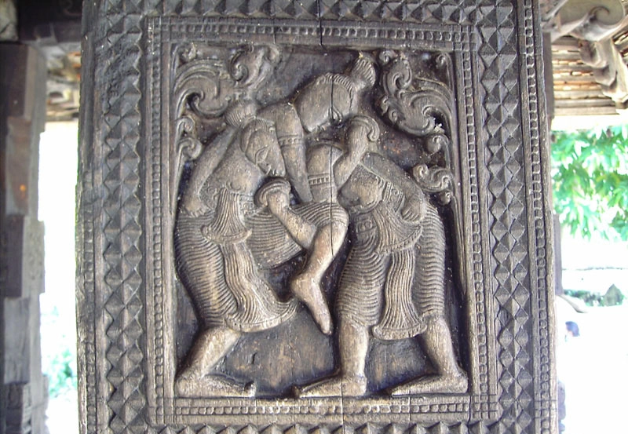
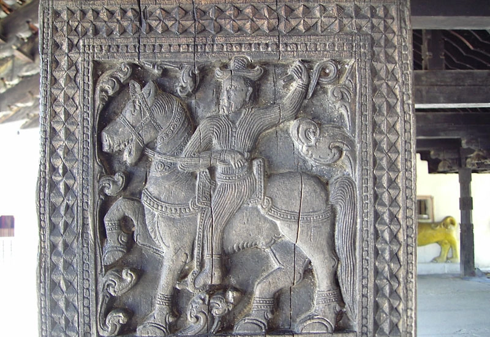
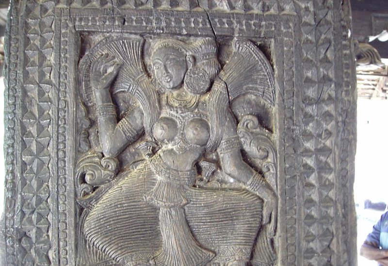

|  |  |  |
| Malawa Poraya known as the "Wrestler" is a great carving. In this carving, there are two wrestlers whom compete each other. | The Horse Rider defined as the "Asharohakaya". This is a simple graving which uses smooth lines. | Nalagana known as the "Musician" is a famous master piece. |
Malawa Poraya known as the "Wrestler" is a great carving. In this carving, there are two wrestlers whom compete each other.
The Horse Rider defined as the "Asharohakaya". This is a simple graving which uses smooth lines.
Nalagana known as the "Musician" is a famous master piece.